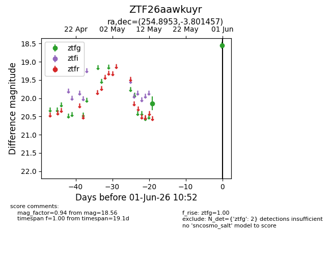
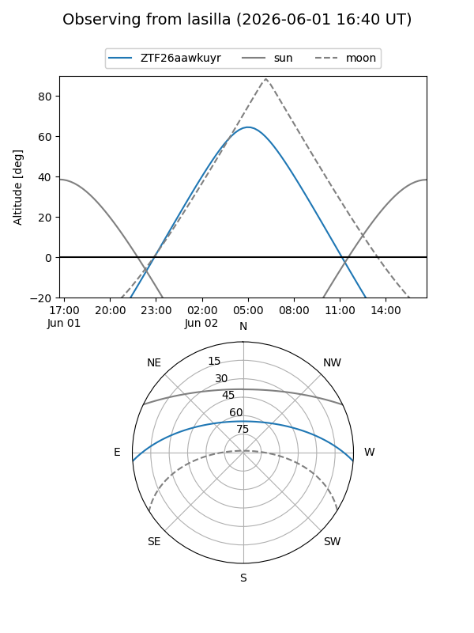
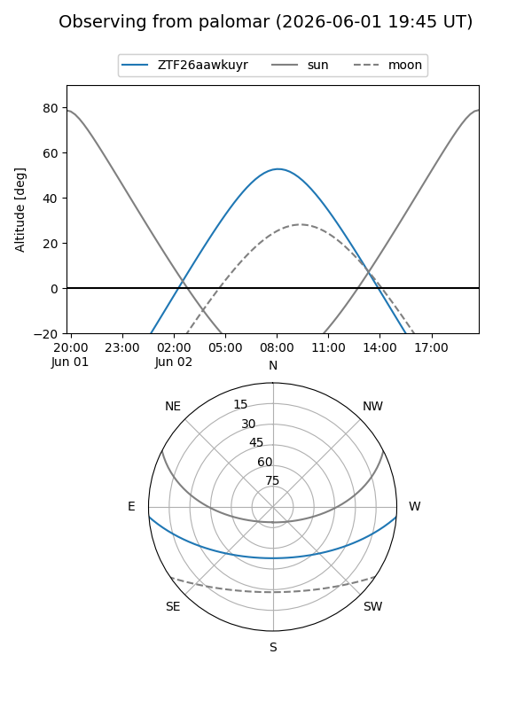

ZTF26aawkuyr
Target ZTF26aawkuyr at 2026-06-01 10:54
Aliases and brokers:
lsst-FINK: link
lsst-Lasair: link
lsst-ALeRCE: link
ztf-FINK: link
ztf-Lasair: link
ztf-ALeRCE: link
alt names
ZTF26aawkuyr (ztf,fink_ztf)
Coordinates:
equatorial (ra, dec) = 254.8953,-3.80146
equatorial (HMS+DMS) = 16:59:34.87,-03:48:05.24
galactic (l, b) = (15.7588,+22.71722)
Flags:
Photometry:
last ztfg=18.56
2 ztfg detections
Lightcurve

Visibility


Additional plots